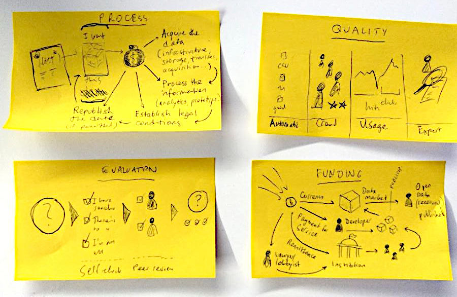

Strategies for small companies and stewards to fundraise through meaningful open data work.
This site explores earning income via open data stewardship: maintaining datasets, portals, and tools for community benefit. Focus on sustainable models for small teams, drawing from open source best practices.

Updated marketplaces for gigs, funding, fiscal hosting emphasizing stewardship:
| Type | Name | URL | API |
|---|---|---|---|
| Gigs | Upwork | upwork.com | https://developers.upwork.com/ |
| Gigs | Freelancer | freelancer.com | https://developers.freelancer.com/ |
| Gigs | Fiverr | fiverr.com | |
| Funding | GitHub Sponsors | github.com/sponsors | https://docs.github.com/en/sponsors |
| Funding | Open Collective | opencollective.com | https://docs.opencollective.com/ |
| Fiscal | NumFOCUS | numfocus.org | https://numfocus.org/sponsors/ |
| Fiscal | Open Source Collective | opencollective.com/opensource |
Source: data/markets.csv